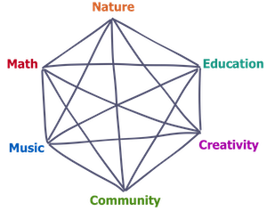

The six pillars behind my work are
- Nature (and life)
- Math (and computation & science)
- Music (and art)
- Community (and teamwork)
- Creativity (and cultural evolution)
- Education (and communication)
It is hard to isolate these pillars and, like community and education, they often overlap. Each pillar, alone, is meaningful to me. But so are their combinations and resulting synergies. This results in six connected pillars.
Nature is an infinite source of inspiration. There is always more detail to admire. Math—the "science of patterns"— is a powerful tool to dig deeper and see beyond the senses. Algorithms and other computational methods can bring math to life. If math is the "science of patterns," then algorithms are the "science of process."
It is one thing to understand and navigate the world alone. To do it with others requires a shared language with shared meaning—it requires culture, which requires getting on the same page. I think life is better shared—sharing laughs, recipes, skills. Teamwork is a kind of magic that lets the constituents create more together than they could alone.
Culture evolves through education and creativity.
It is easy for me to find the spark and beauty in ideas, and I enthusiastically share them with others. This is the force that motivates me to do the things I do, from getting a PhD, to teaching, to traveling.
From going on a road trip or a hiking trip, to getting a PhD, to teaching and mentoring, these pillars are behind everything I do.
My Ph.D. thesis Towards a Mathematical Theory of Group Creativity and Collaboration explores orienting game theory to
My work is largely driven by culture, how it holds us together, and how we shape its evolution.
One of the largest cultural practices that shape the evolution of culture is education.
Humans are hardwired to learn. We are born to learn culture. We are born to learn language. We are simply born to learn.